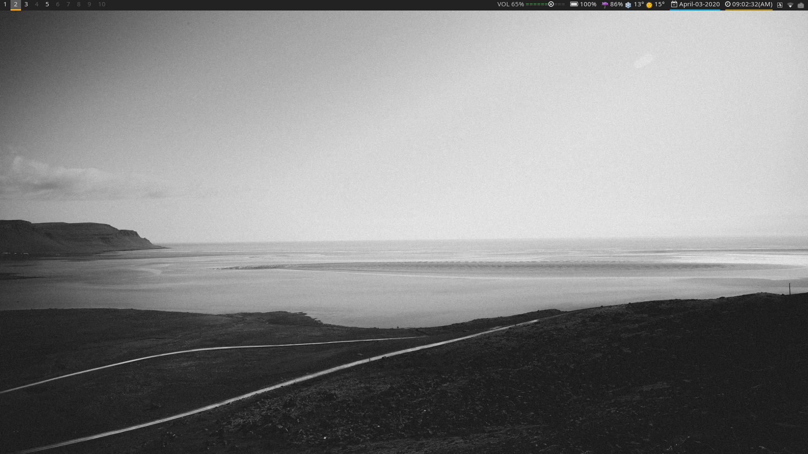
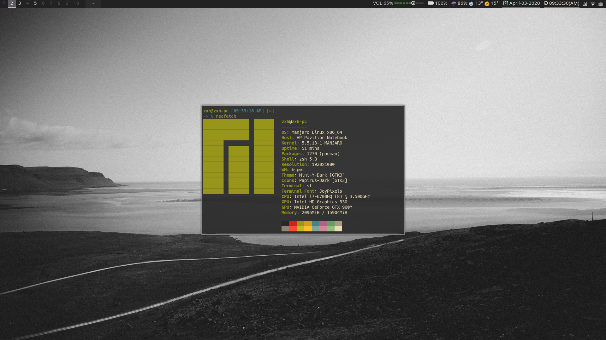

解决linux中tiling manager画面撕裂和死亡bi bi bi的声音
Posted

解决linux中tiling manager画面撕裂和死亡bi bi bi的声音
在我这段使用manjaro bspwm的时间内，遇到过一个奇怪的问题，首先我是先安装的manjaro cinnamon，然后再安装的bspwm，这里就出现了一个奇怪的问题：在cinnamon环境下，任何的画面浏览是没有撕裂的问题的，而切换到了bspwm后，在使用浏览器浏览网页时，使用鼠标向下滚动时画面会一卡一卡的，有点果冻效应，应该就是网上所说的画面撕裂问题了。另一个就是一个经典的死亡哔的提示音了。

解决tiling manager 中画面撕裂
首先需要声明的是本方法只适用于我的情况，其它问题引起的解决办法应该有所不同。
-
问题引起原因
由于我的系统在cinnamon桌面没有问题，而在bspwm和dwm中皆有这个问题，首先我就把显卡问题的可能性排除了。经过一番的查询和研究，compositor应该就是引起这个问题的主要原因，在cinnamon环境下，系统并不使用我自行安装的
picom(compton)这个合成管理器(compositor)，而是cinnamon环境自带的合成管理器，而在其它的tiling manager中例如bspwm中由于直接使用了picom -b，所以导致了画面撕裂的问题。 -
解决办法，以bspwm为例
在运行
picom时加上参数--experimental-backends# .config/bspwm/bspwmrc # 使用下面命令，而不是直接使用 picom -b picom --experimental-backends -b
解决系统哔哔的提示音
-
临时生效（重启后又有），直接使用：
sudo rmmod pcspkr -
开机后自动屏蔽
echo "blacklist pcspkr" > /etc/modprobe.d/nobeep.conf
ALL DONE

大功告成啦，快去炫耀炫耀吧！